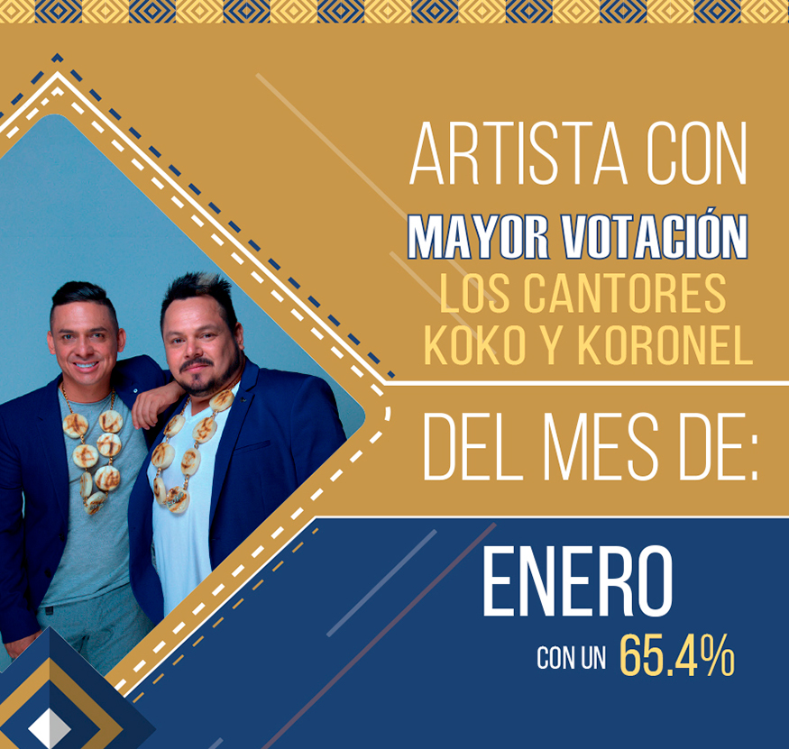

Directorio de Artistas

Alexander González
{kind=link}
Amanda Patricia
 |
La hermosa payanés promete llegar con su nuevo sencillo a todos los rincones de Colombia y ubicarse en los artistas más tops de la música Colombiana regional (popular). "Como me ves más buena", cuenta la historia de esas personas que sin motivo se alejan y terminan una relación, y con el tiempo, por motivos de la vida se vuelven a encontrar y ella “está más buena”, él quiere volver y que todo sea como antes”. |
Aragón
 |
"Aragón" su nombre de pila, Víctor Manuel González, un joven de 18 años, hijo de uno de los cantautores más importantes de la música en Colombia, como lo es El Charrito Negro. Inicia en la música desde muy temprana edad y se catapulta como uno de los artistas revelación de la música popular de nuestro país. Hoy presenta su más reciente sencillo #VivoMiVida canción de autoría de su padre El Charrito Negro. |
Astra
{kind=link}
Alessandro D
{kind=link}
Dareska
 |
Daisy Elena Restrepo Cano, más conocida en el mundo artístico como Dareska es una cantante solista de música popular, nacida en el municipio de Itagüí del departamento de Antioquia. Dareska se encuentra potenciando su producto de música popular con canciones como: “Que te piquen caña”, “El Secuestro” ; acompañada del gran artista de música popular Jhon Alex Castaño y su más reciente éxito “El títere”. |
Equipaje 11
{kind=link}
Fernando Gil
{kind=link}
Iván Carvajal
 |
Iván Carvajal, cantante y compositor nacido en Solano Caquetá, tiene una larga trayectoria en la música popular colombiana, a sus 26 años lanza su primer sencillo titulado “Pues vete” logrando con este un nuevo formato y ritmo de la música popular éxito que dejará mucha expectativa en las mejores emisoras de radio y canales nacionales de Colombia. Contacto: |
Jeison Pérez
{kind=link}
Sebastián Rosales
{kind=link}
John Jairo Pérez
{kind=link}
John Yara
 |
John Yara, sigue posicionándose como uno de los artistas más importantes del género popular y presenta su nuevo éxito -Mi gran felicidad-, junto a su agrupación "Indomables de América", siendo una de las más destacadas y admiradas por el público. Contacto: |
Juan Palau
 |
Juan Palau decide hacer... OTRA COSA. Contacto: |
Julian Daza
{kind=link}
Julián López
{kind=link}
Los Cantores Koko y Koronel
 |
Con un recorrido importante como la primera agrupación de parodia del país, Los Cantores Koko y Koronel llegan con una interesante propuesta como lo es -Miguelito-. |
Los Ronisch de Colombia
{kind=link}
Nora Elena
{kind=link}
Orlando López
{kind=link}
Orquesta Rumba Kids
 |
La orquesta de Florencia, Caquetá, Llega este 2019 cargada de buenos éxitos. -El verbón-, es un sencillo que se destaca en este nuevo álbum. Contacto: |